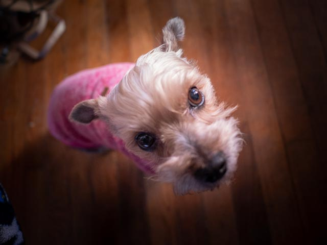

Amazing Article about Pookie
by Fabien BerdahPookie the cutest and smartest and nicest dog in the world. She is so cute that everyone fights for her
attention. She likes to sleep (a lot), eat, play (sometimes), play with Kelly (the Pookie thief) and simply
watch TV. She only sleeps with Kelly, and she only likes Kelly. Sometimes, I take as little space as I can and
leave her almost all the couch so that she can sleep comfortably. I even try not to laught or breathe too deeply
in order not to disturb her, but as soon as Kelly comes in, it's like I don't exist...
She is a real bitch, but she is the cutest bitch in the world and I love her more than Kelly because Kelly is
also a bitch :).
This is Pookie
Pookie was born on December 8th 2010 and she won our hearts right away. She smelled really bad but she was so
cute
and tiny that we couldn't resist. She was so shy at first, but as soon as she got confident, she got really
confident!!! She started jumping around everywhere, all the time, up, down, up, down, higher, lower, on the
couch,
on the back of the couch, and back down... Jumping from a height of 5 times her height!!!
Also, when we play ball with her, we have to go an pick the ball ourselves, because she is too lazy to bring it
back. Sometimes, she just goes to get the ball and she runs away with it so that we don't throw it again.
She is a coward, always hidding in the face of danger, but she has the best personality and she is so funny. She
is the kindest dog in the world and our best friend in the Universe. There is no one like Pookie and she knows
this, but she loves us too and always comes to comfort us when we are stressed.
We love you Pookie!